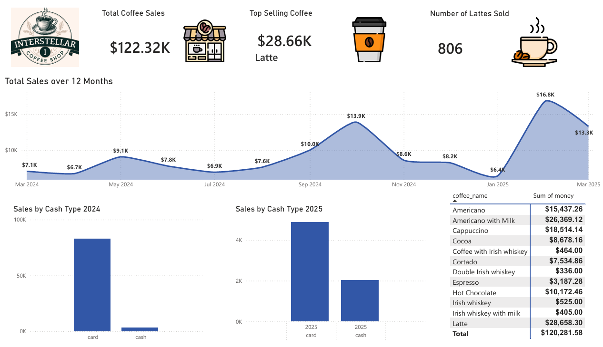
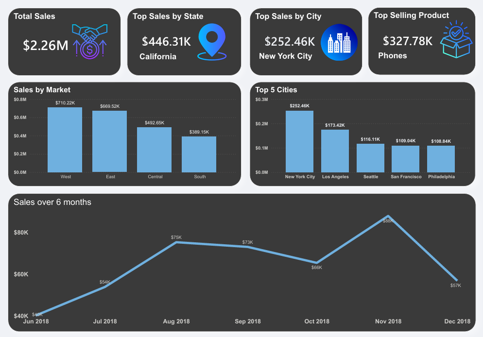

La mayoría de las empresas modernas no tienen un problema de recopilación de datos, sino un problema de visibilidad estratégica. Las oportunidades de crecimiento vitales permanecen atrapadas en hojas de cálculo fragmentadas y sistemas desconectados. Diseñamos paneles de control ejecutivos a medida que transforman métricas complejas y dispersas en una fuente centralizada de verdad operativa, permitiendo a los líderes tomar decisiones proactivas con absoluta confianza.
Centro de Comando de Ventas Empresariales
Una matriz completa de ingresos nacionales diseñada para tomadores de decisiones de alto nivel. Este panel consolida datos de rendimiento multirregionales, trayectorias de crecimiento interanual y proyecciones prospectivas en un solo lugar, asegurando que la alta dirección identifique instantáneamente los sectores de alto rendimiento y las tendencias del mercado.
Matriz de Crecimiento y Rendimiento Corporativo
Un rastreador de salud ejecutiva intuitivo que evalúa las adquisiciones mensuales de clientes, el cumplimiento de objetivos y las puntuaciones operativas activas. Construido específicamente para eliminar la sobrecarga de datos, esta presentación aprovecha una tipografía limpia y contrastada para resaltar los puntos de referencia de rendimiento fundamentales de un vistazo.
Monitor de Salud Operativa y de Proyectos
Una perspectiva optimizada y accesible adaptada para los ejecutivos de operaciones. Esta variación muestra el seguimiento crítico de canales, la división regional de ingresos y las métricas de salud organizacional utilizando estructuras de diseño equilibradas que priorizan el análisis mental rápido y cero fricción técnica.

Ingresos Minoristas e Inteligencia Comercial
Una visión general granular de los puntos de venta que realiza un seguimiento de la actividad minorista localizada. Esta interfaz muestra cómo el volumen de transacciones, las preferencias de pago y el rendimiento detallado del menú se pueden mapear durante un período de 12 meses para revelar picos de demanda estacionales distintos y hábitos de compra de los consumidores.

Tablero Ejecutivo de Mercado de Alto Valor
Un panel de inteligencia financiera en modo oscuro optimizado para la revisión corporativa. Elimina la complejidad técnica para poner las métricas de rendimiento multimillonarias en el centro, visualizando instantáneamente estados de alto rendimiento, categorías de productos más vendidas y tendencias clave de ganancias regionales durante un ciclo rodante de seis meses.